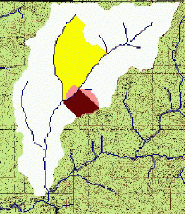
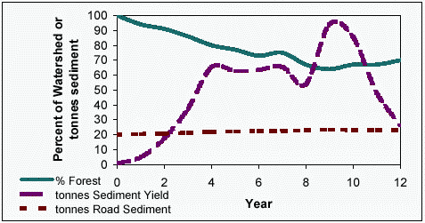

Predicting cumulative watershed effects of fuel management with improved WEPP technology
William J. Elliot and Joan Q. Wu
Abstract
The increase in severe wildfires in recent years is due in part to an abundance
of fuels in forests. In an effort to protect values at risk, and decrease the severity of
wildfires, forest managers have embarked on a major program of fuel reduction. Past
research has shown that such fuel reduction may have minimal impact at a hillslope
scale, but when numerous hillsides are disturbed within a watershed over a number of
years, the cumulative effect of such disturbances may be unacceptable. In addition,
road networks are necessary to support fuel management activities by providing
access for thinning crews, small diameter timber extraction, and fire crews. These
road networks were frequently designed and constructed to minimize cost, and do not
necessarily minimize adverse watershed impacts. Research findings from wildfire,
fuel management, and roads will be presented to provide a context for predictive
modeling. There are some new predictive tools to aid in watershed analysis. These
include the GeoWEPP GIS wizard, the online WEPP:Road Batch processor and
WEPP FuMe fuel management analysis tools, and a revised WEPP hillslope model
with improved water balance and lateral flow capabilities. In this paper, we use these
new technologies to explore the sources of sediment and runoff within a typical
forested watershed. The paper shows improvements in runoff prediction with the
revised WEPP model, as well as the relative importance of roads, wildfire, prescribed
fire, and thinning operations in generating sediment at the hillslope and watershed
scales. The analysis of the performance of the modified WEPP interface showed that
there are problems within the WEPP Watershed stream flow routing routines that will
need to be addressed before use of this modified model can be recommended.
Introduction
In recent years, an increase in high severity wildfires has lead to an increase in
thinning and prescribed fire to reduce forest fuel loads. In planning for such fuel
management operations, specialists need erosion and runoff prediction tools to
estimate watershed impacts of their proposed actions.
An undisturbed forest experiences very little, if any, surface erosion. When a forest is
disturbed by wildfire, roads, timber harvest, thinning operations, or prescribed fire,
erosion rates increase. Forested watersheds are able to recover within a few years
from most single disturbance events. As more disturbances are added during a year,
and additional disturbances in the years that follow, the forest is less likely to recover
to an undisturbed condition. The cumulative effects of numerous disturbances over a
number of years must be considered to be able to manage forest lands. Often
sediment from disturbed hillslides may take years to decades to be routed through a
stream system. Thus, it is difficult to attribute sediment measured in the stream to
disturbances that have just occurred. The technology that we are presenting assumes
that sediment may take a number of years to be routed, and we have tried to present
erosion rates as Megagrams (tonnes) of sediment per square kilometer of watershed
wherever possible, averaged out over the time period between disturbances.
The Water Erosion Prediction Project (WEPP) (Flanagan and Livingston, 1995) was
developed by a number of research and management agencies in United States
Departments of Agriculture and Interior. The WEPP model was released with both a
"hillslope" and a "watershed" version.
Scientist at the Rocky Mountain Research
Station and elsewhere parameterized the hillslope version for forests (Elliot and Hall,
1997). Developing topographic input files for the watershed version was not easily
achieved until in 2001, when a Geographic Information System (GIS) tool was
developed to assist in spatial analysis and visualization of erosion distribution
(Renschler, 2002). In this paper, we will discuss some of the newer applications of
the WEPP hillslope and watershed technology to fuel management planning.
Table 1 presents some typical erosion rates observed in or near the Northern Rocky
Mountains. These values will be useful for comparison to predicted values presented
later in the paper. These are generally hillslope erosion rates, and in many cases, the
watershed impact from them may be spread out over decades as the sediment is
routed downstream. Erosion processes are highly variable, and the values observed in
Table 1 are samples that could easily be twice as great, or half as much on a nearby
hillside. Another key aspect of forest erosion processes is that frequently there is a
buffer between the disturbance and the stream system, greatly reducing the delivered
sediment. With roads in particular, any vegetated buffer between road drainage
structures and a channel will be an area of sediment deposition, greatly reducing the
amount of sediment from a road that is actually delivered to a stream.
Table 1.
Examples of observed erosion rates in the Northern Rocky Mountains
| Source of Sediment |
Observed Amount (Mg/km2) |
Reference |
| New Roads (Older roads will be about 1/4 this amount) |
18 Mg/ha, or if 2 km road/km2, then 13.4 Mg/km2 |
Elliot and Foltz, 2001 |
| Prescribed fire, up to |
100 Mg/km2 |
Elliot and Foltz, 2001 |
| Wildfire |
500 -- 1000 Mg/km2 |
Elliot and Robichaud, 2004 |
| Typical "Background" |
10 Mg/km2 |
Megahan, 1974 |
WEPP Hillslope Scale Tools
In the late 1990s, two hillslope scale erosion prediction tools were introduced
to aid in erosion prediction from individual forest road segments (WEPP:Road) and
from disturbed forest hillslopes (Disturbed WEPP) (Elliot, 2004a and b). These tools
have been extremely popular with thousands of users from around the world. As the
tools have been applied to numerous problems, we have identified specific sets of
runs that are common, and have developed two new tools that provide multiple runs
to aid in watershed analysis. One of them, WEPP:Road Batch allows the user to
develop a database of road segments from GPS, GIS, or other sources. The user can
format the characteristics of each road segment with a database or spreadsheet,
transfer the data to WEPP:Road Batch, and carry out multiple runs (Brooks et al.,
2003). Up to 200 road segments can now be run and summarized at a time. The
summary output can be copied and incorporated back in to the original spreadsheet,
database, or GIS for additional analysis if desired. As the database and file structure
for WEPP:Road Batch are identical to WEPP:Road, the validation presented by Elliot
and Foltz (2001) showed that predicted erosion rates were similar to observed for a
wide range of conditions.
A second new interface released in January, 2005, is WEPP FuMe, a fuel management
analysis tool. WEPP FuMe accepts the input for a single hillslope with additional
information about a fire return cycle, frequency of thinning, and road density, and
carries out 12 different runs with WEPP:Road and Disturbed WEPP that are typical of
fuel management analyses. The output is presented in tabular form, along with a
narrative to aid the user in synthesizing the results from the 12 WEPP runs. Table 2
presents the WEPP FuMe output from the first 7 runs for a hillslope in a forested area
about 25 km NE of Moscow, ID. For many conditions, the erosion from the road
network may exceed that from the thinning operations. Additional runs are presented
following the output narrative offering the user additional options for describing other
fire severities or management treatments. In many cases, the user may wish to
demonstrate that erosion from the proposed fuel treatment activities may lead to a less
severe wildfire, and a much lower sediment delivery from the hillslope in the long run
as a result of the treatment. For the example shown in Table 2, the erosion predicted
for a moderate severity fire was only 841 tonnes per sq km, less than half that from
the high severity fire that is now common in western watersheds with excessive fuel
loads. These kinds of results and discussion on the output screens are designed to aid
the user in preparing documentation to support forest fuel management activities. An
example of a synthesis with information from Table 2 plus the sediment delivery
value for a moderate severity fire given lower on the WEPP FuMe output page can be
combined to give a summary of two alternatives as shown in Table 3.
Table 2.
First output table from a WEPP FuMe run for a typical slope in the Strychnine Creek, ID drainage. Slope length 250m, slope sttepness, 20 percent.
| Line |
Source of sediment |
Erosion in year of disturbance
(Mg km-2) |
Return period of disturbance
(y) |
"Average" annual sedimentation
(Mg km-2y-1) |
| 1 |
Undisturbed forest |
|
1 |
0 |
| 2 |
Wildfire |
1948. |
40 |
48.7 |
| 3 |
Prescribed fire |
231. |
20 |
30.1 |
| 4 |
Thinning |
9.8 |
20 |
0.5 |
| 5 |
Low access roads |
0.4 to 2.2 |
1 |
0.4 to 2.2 |
| 6 |
High access roads |
1.0 to 2.3 |
1 |
1.0 to 2.3 |
Table 3.
A synthesis of fuel management runs from Table 1 and the WEPP FuMe output
| No Action Aternative |
Fuel Treatment Alternative |
| Source |
Sediment Yield (Mg/km2/y) |
Source |
Sediment Yield (Mg/km2/y) |
| Undisturbed Forest |
0 |
Undisturbed Forest |
0 |
| High Severity Wild Fire |
48.7 |
Moderate Severity Fire |
841 Mg/km2/40 y = 21 Mg/km2/y |
| Low traffic roads |
0.4 to 2.2 |
High traffic roads |
1.0 to 2.3 |
| |
|
Thinning |
0.5 |
| |
|
Prescribed fire |
30.1 |
| Total |
49.1 to 50.9 |
Total |
51.6 -- 53.9 |
WEPP Watershed Tools
The WEPP watershed technology is part of the WEPP model when it is
downloaded. (Flanagan and Livingston, 1995). A database describing forest
conditions is included with the WEPP file distribution. The watershed interface,
however is difficult to use both in building the watershed files and viewing the
distribution of predicted erosion results on the watershed. To address this problem,
GeoWEPP, an ArcView extension was developed (Renschler, 2003). GeoWEPP uses
digital elevation models (DEMs) and topographical analyses tools to build the
necessary input files to run the WEPP watershed version for watersheds containing up
to 1,000 hillslope elements.
To demonstrate the suitability of the GeoWEPP tool, an example study was carried
out on a the 1490 ha the Strychnine Creek drainage (Figure 1) (Elliot and Foltz,
2003). The GeoWEPP tool divided the watershed into 33 hillslopes, and 13 channel
segments. The watershed is currently under consideration for significant fuel
reduction activities, including small diameter logging in year 1, prescribed fire in year
2, and recovery of hydrologic stability and vegetative cover during the next five years.
Table 4 shows the sequence of vegetation and soil properties necessary to sequentially
describe these disturbances and recovery years for each hillslope.
|

|
Figure 1. Graphical view of output from year 12 of simulations.
Areas near outlet have recovered from fuel treatment, and areas near the center
of the watershed are recovering from forest operations and prescribed fire.
The darker the area, the greater the erosion rate.
Predicted erosion rate in the white is zero, the lighter shade, 10, the medium shade, 30,
and the dark shade 140 Mg/km2.
|
Table 4.
WEPP vegetation and soil template values used for the analysis, assuming a silt loam soil
| Year |
Vegetation |
Hydraulic
Conductivity
(mm/h) |
Rill
Erodibility
(s/m) |
| 1 |
Established Forest |
28 |
0.0004 |
| 2 |
Harvest: 80 percent cover, Young forest |
23 |
0.0004 |
| 3 |
Burn: 80 percent cover, Low severity fire |
13 |
0.0005 |
| 4 |
90 percent cover, Short grass |
11 |
0.0004 |
| 5 |
95 percent cover, Tall grass |
23 |
0.0004 |
| 6 |
95 percent cover Young forest |
23 |
0.0004 |
| 7 |
100 percent cover Young forest |
23 |
0.0004 |
| 8 |
Established Forest |
28 |
0.0004 |
To demonstrate the application of GeoWEPP, each year a hillslope was selected to
begin the sequence presented in Table 4, starting with hillslopes at the bottom of the
watershed, to initiate the fuel reduction sequence. We assumed that all other
hillslopes were covered in forest at the start of the simulations. The GeoWEPP tool
predicted values for the hillslopes in this watershed similar to the values predicted for
the typical hillslope example presented in Table 2, when it received that treatment. In
addition, the GeoWEPP technology allowed the user to analyse these disturbances as
distributed in time and space, with Figure 1 giving a snapshot of the distribution of
erosion in the watershed in year 12. Figure 2 shows the sediment yields for the first
12 years of analysis, for both the disturbed hillslopes and the road network. Note that
the first year assumed that all hillslopes were undisturbed, and the majority of the soil
erosion was from the road. During the years of this example, the sediment yields at
the watershed scale varied between 40 and 90 tonnes (2.6 to 6 Mg/km2 over the entire
watershed), depending on the area and location of the disturbed hillslopes.
|

|
Figure 2. Percent of watershed in forest during the first 12 years of fuel reduction in watershed, and the
associated sediment yields from roads and fuel management activities.
|
To consider the sediment from roads, sediment delivery was modelled assuming a
road erosion rate of 1.33 t/km on roads with heavy traffic, and 0.67 t/km for roads
with light traffic. These values were estimated with the WEPP model for multiple 60-m
long road segments with a gradients of 4 percent, distances of 20 m between the
road and the stream, and with buffers covered in forest. The rill erodibility value was
reduced from 0.0003 s/m for the road with high traffic to 0.000075 s/m for the road
with low traffic, to reflect the observed surface armouring on roads without traffic
(Foltz, 1998). It is apparent from figure 2 that the sediment from the road accounts
for about a fourth of the sediment generated from human disturbances during active
years, and 96 percent of the sediment in the absence of disturbances. The road
sediment delivery values are approximate estimates in this study, as a detailed road
map was not available. The relative importance of roads in the analysis, however is
unlikely to change with greater detail.
These sediment yield rates need to be compared to the expected sediment yield from
natural disturbances. When the entire watershed was described as wildfire, the
predicted sediment yield was 4832 Mg in the year of the fire (324 Mg/km2).
If the frequency of fire in this area is assumed to be about 40 years, then the average annual
sediment delivered in the years following the wildfire averages about 121 Mg per year
(8.1 Mg/km2/y). These values are lower than the hillslope values shown in Tables 1,
2, and 3 because there is generally considerable deposition in upland channels
following wildfire, with the model, and observed in the field. If fuel management
operations reduce the likelihood of fire, or the severity of the fire, as has been
observed in recent studies, then the average annual sediment production due to the
operations is similar to, or less than sediment from wildfire (Table 3).
To complete a GeoWEPP watershed analysis, some users may wish to add in
sediment from landslides. McClelland et al. 1997, found that typical sediment yields
averaged over the 20 year return period associated with such events was around 10
Mg/km2.
Fuel management operations are unlikely to decrease this value, but a more
dense road network could increase it (McClelland et al., 1997).
Improvements to WEPP Hydrology
Currently, the WEPP model only predicts surface runoff from hillsides and
watersheds. Observations in many steep forest watersheds have shown that over 99
percent of all runoff is subsurface flow. Surface runoff prediction is generally
adequate for surface erosion prediction and sediment transport through the stream
system, as sediment in streams only moves during large runoff events. There is a need
for a model to predict total watershed water yield, however, so that forest managers
can evaluate the impact of forest management activities on both water quantity and
water quality.
The lateral flow subroutines in the WEPP model were modified to estimate both
surface runoff from precipitation and snowmelt events, and subsurface flow on all
days when soil water content was sufficient to cause subsurface flow laterally along
steep forest hillslopes to the stream system (Wu et al., 2000). To evaluate the
performance of this new technology, and gain insight into the sensitivity of two
critical lateral flow parameters, the first fork in the Strychnine Creek drainage (Dry
Fork) was selected as an example watershed. For the analysis, we assumed the entire
drainage was covered with trees. Past experience has shown that the current version
of WEPP seldom predicts any surface runoff from a forested hillslope in this climate,
so any runoff that was generated would most likely be associated with lateral flow.
The GeoWEPP tool was used to build the necessary watershed hillslope and structure
files. The Dry Fork drainage contained 345 ha, and GeoWEPP divided the area up in
to 59 hillslopes with 25 channel segments. As the current WEPP Windows and
GeoWEPP interfaces can not yet build the customized soil files needed the modified
version of WEPP, the runs were completed using WEPP batch commands to link the
topographic, soils, vegetation, and climate files to the WEPP model. The two critical
parameters within the lateral flow subroutines are the degree of anisotropy (the ratio
of lateral hydraulic conductivity to the vertical conductivity value specified for the top
soil layer), and the depth of the soil. The results of this analysis are presented in Table 5.
Table 5.
Sensitivity of the watershed runoff and sediment yield as predicted byt he
prototype WEPP watershed model to changes in anisotropy and soil depth for the
Dry Creek Fork of Strychnine Creek, Idaho.
|
| Depth of soil
|
|
| 800 mm
| 1200 mm
| 1600 mm |
| Anisotropy |
RO1
(mm) |
SY2
|
Y3
|
RO
(mm) |
SY
|
Y
|
RO
(mm) |
SY
|
Y
|
| Current WEPP
| 6
| 25.91
| 3
| 12.6
| 42.20
| 30
| 13.1
| 37.88
| 30
|
| 10
| 252
| 0.84
| 4
| 10
| 0.00
| 1
| 33.0
| 18.90
| 30
|
| 25
| 115
| 22.26
| 1
| 103
| 29.13
| 8
| 39.3
| 11.22
| 30
|
| 50
| 132
| 14.55
| 1
| 138
| 19.25
| 30
| 46.9
| 6.72
| 30
|
| 100
| 294
| 32.58
| 25
| 148
| 13.74
| 30
| 58.1
| 5.74
| 30
|
| 500
| 454
| 20.52
| 30
| 212
| 8.81
| 30
| 121
| 9.74
| 30
|
1 RO is runoff
2 SY is the average annual sediment yield in Mg/km2
3 Y is number of years of weather for run, 30 y is the maximum specified
A number of points of discussion arise from an inspection of the results in Table 5.
The first is that when the lateral flow capabilities were added to the WEPP model,
runoff increased significantly, but in most cases, sediment yield decreased. This is
probably because of the processes dominating forest hydrology. In the current version
of WEPP, runoff generally occurs when soils are saturated. In the absence of lateral
flow, the soils were more likely to be saturated, increasing surface runoff, and with it,
surface erosion. When lateral flow was incorporated into the modified WEPP model,
soils were less likely to be saturated, so there was less likely to be surface runoff and
the erosion associated with it.
Table 5 shows that as anisotropy increases, so does runoff. This result was expected.
The decrease in runoff with deeper soils was not expected from the modified WEPP
program. The expectation was that deeper soils would have greater transmissivity,
and be able to deliver greater amounts of water. It appears that this was not the case.
It is more likely that the deeper soils were able to retain more water for vegetation,
leading to greater evapotranspiration later in the season. Generally, in this climate,
the majority of the precipitation occurs as winter snowfall, and there is little
precipitation during the summer. The deeper soil appears to be better able to retain
the melted snow in the spring for use later in the season, reducing spring time runoff.
It was our intent to run the WEPP model for 30 years for each condition. We found,
however, that for some of the conditions that the WEPP model would not complete its
run. The hillslope predictions were always complete, but for those runs in Table 5 for
less than 30 years, the watershed routing routines were unable to route the runoff and
sediment generated by the hillslopes for all 30 years. The source of this problem
requires further investigation. Recent studies have suggested that the routing routines
within the WEPP watershed version are in need of significant scientific improvement
(Conroy et al., 2003), and these findings would support that contention. Because
some of the runs in Table 5 were only for a few years, they may not be directly
comparable to the others. It appears that the single year runs tend to have less runoff,
and relatively high sediment yields for the amount of runoff. A full evaluation of the
interactions among soil depth, anisotropy, and runoff is not possible until this problem
within the WEPP routing routines is fixed.
The stream flows from three nearby USGS gauging station were obtained (USGS,
2005) and a summary of those stations is presented in Table 6. The two small
watersheds near Boville, about 20 km east of the site, will likely have slightly higher
precipitation than the site. The larger Palouse River watershed, with the station about
30 km west of the site, includes the Strychnine Watershed and a significant amount of
lower elevation area with a drier climate. From the information presented in Table 6,
it is apparent that the larger predicted runoff values in Table 5 with shallower soils or
higher anisotropy values more closely predict the runoff expected from this site.
Table 6.
Summary of three USGS stream flows near Strychnine Creek, Idaho.
| Stream |
Drainage Area
(sq mk) |
Years of Record |
Avg Runnoff
(mm) |
| Potlatch River Nr. Boville |
108.2 |
1960-1970 |
483 |
| Bloom Creek Nr. Boville |
8.2 |
1960-1970 |
531 |
| Palouse River Nr. Potlatch |
824.7 |
1916-1918
1967-2002 |
293 |
Summary
Four recently developed tools based on the Water Erosion Prediction Project
(WEPP) model for use with forest fuel management activities were presented. The
first was the WEPP:Road Batch online interface, intended for use with GIS or GPS
technologies that develop databases of road networks. It allows users to predict the
erosion from batches of road segments, rather than the past practice of manually
entering road segments one at a time. The second hillslope tool, the WEPP FuMe
online interface is intended to be a useful aid in planning individual fuel management
activities. It carries out 12 WEPP runs for a single hillslope input, and provides both
tabular and narrative summaries on the output screens. Predicted values are in the
range of observed values for both interfaces.
Two watershed scale tools are under development to aid in fuel management. The
GeoWEPP tool may be a useful tool in analyzing effects of fuel management that are
distributed in time and space. It does not, however, have the capability to predict total
runoff. A new version of WEPP that includes lateral flow was presented that shows
promise in predicting forest stream flows. Before widespread use can be
recommended, however, additional work is needed to parameterize the model, and to
improve the stream routing algorithms in the existing WEPP Watershed version.
References
Brooks, E.S., Boll, J., and Elliot, W. (2003).
GPS-Assisted road surveys and GIS-Based road erosion modeling.
Paper No. PNW-03-109. Presented at the
2003 Pacific Northwest Regional Meeting of the ASAE, 25-27 Sep.
Clarkston, WA. ASAE, St. Joseph, MI. 17 p.
Conroy, W.J., Wu, J.Q., and Elliot, W. (2003).
Proposed modifications to the WEPP model to improve sediment yield predictions for TMDL scenario analyses.
Paper No. 032055.
Presented at the 2003 Annual International Meeting of the ASAE, 27-30 July, Las Vegas.
ASAE, St. Joseph, MI. 13 p.
Elliot, W.J. (2004a).
WEPP internet interfaces. FSWEPP, <https://forest.moscowfsl.wsu.edu/fswepp/>. (Feb. 2005).
Elliot, W.J. (2004b).
WEPP internet interfaces for forest erosion prediction.
Jour. Am. Water Res. Assoc. 40(2):299-309.
Elliot, W.J., and Hall, D.E. (1997).
Water erosion prediction project (WEPP) forest applications.
U. S. Department of Agriculture, Forest Service, Intermountain Research Station, Ogden, UT.
Gen. Tech. Rep. INT-GTR-365: 11 p.
Elliot, W.J., and Foltz, M. (2001).
Validation of the FS WEPP interfaces for forest roads and disturbances.
Paper No. 018009.
Presented at the ASAE International Meeting, 31 July-1 August, Sacramento, CA.
ASAE, St. Joseph, MI. 17 p.
Elliot, W.J., and Robichaud, P.R. (2004).
The effectiveness of postfire mitigation treatments.
Presented at the 2004 BAER Training Workshop, 30 April, 2004, Denver, CO.
Rocky Mountain Research Station, Moscow, ID.
Elliot, W.J., and Foltz, R.B. (2003).
The Challenges in developing the WEPP cumulative Effects Model.
Presented at the 2nd Forest Engineering Conference, 12-15 May, 2003,
Vaxj�, Sweden. 4 p.
Flanagan, D.C., and Livingston, S.J. (1995).
WEPP User Summary, USDA-Water Erosion Prediction Project (WEPP).
USDA-ARS National Soil Erosion Research Laboratory, W. Lafayette, IN. 123 p.
Foltz, R.B. (1998).
Traffic and no-traffic on an aggregate surfaced road: Sediment production differences.
Proceedings of the seminar on environmentally sound forest roads and wood transport.
Sunnia, Romania, 17-22 June, 1996. FAO, Rome.
McClelland, D.E., Foltz, R.B., Wilson, W.D., Cundy, T., Heinemann, R., Saurbier, J., and Schuster, R. (1997).
Assessment of the 1995 and 1996 floods and landslides on the Clearwater National Forest. Part I: Landslide assessment.
USDA Forest Service, Region 1, Missoula, MT. 52 p.
Megahan, W.F. (1974).
Erosion over time on severely disturbed granitic soils: A model.
USDA For. Serv. Res. Pap. INT-156.
U.S. Department of Agriculture, Forest Service, Intermountain Forest and Range Experiment Station, Ogden, UT: 26 pp.
Renschler, C.S. (2003).
Designing geo-spatial interfaces to scale process models: The GeoWEPP approach.
Hydrological Processes 47, p. 189-209.
United States Geological Survey (USGS). (2005).
Calendar year stream flow statistics for the nation.
<https://nwis.waterdata.usgs.gov/>. (Feb. 2005).
Wu, J.Q., Xu, A.C., and Elliot, W.J. (2000).
Adapting WEPP for forest watershed erosion modeling. Paper No. 002069.
Presented at the 2000 International ASAE Meeting, 9-12 July, Milwaukee, WI. ASAE, St. Joseph, MI. 9 p.
Authors:
William J. Elliot, Rocky Mountain Research Station, USDA Forest Service, 1221 South Main,
Moscow, ID. 83843; PH (208) 883 2338 FAX (208) 883 2318; welliot@fs.fed.us
Joan Q. Wu, Associate Professor, Dept of Bio Systems Engineering, Washington State University,
Pullman, WA 99164; PH (509) 335 5996; FAX (509) 335 2722; jwu@wsu.edu
Originally published as:
Elliot, W.J., and J.Q. Wu. 2005.
Predicting cumulative watershed effects of fuel management with improved WEPP technology.
In Moglen, G.E., ed.,
Managing Watersheds for Human and Natural Impacts: Engineering, Ecological, and Economic Challenges.
Proceedings of the 2005 Watershed Management Conference, July 19-22, 2005, Williamsburg, VA;
Sponsored by Environmental and Water Resources Institute (EWRI) of the American Society of Civil Engineers.